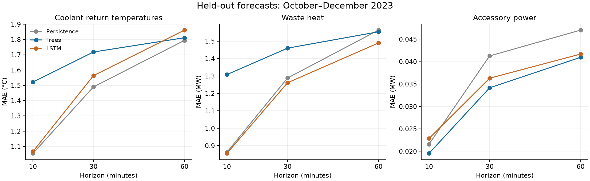

Sequential screening with fixed model settings. Same chronological split as the earlier power experiment: train January–July, validate August–September, test October–December. Every fitted target compares a 32-unit LSTM (one predeclared seed, 42) with histogram boosted trees. Simple baselines are essential. No test-driven tuning was performed.
Event thresholds are statistical definitions learned from training data. They are not facility operating limits. Forecasts assume input measurements are available without reporting delay.
| Target | Finding |
|---|---|
| Coolant return temperatures | Persistence is best averaged across all loops. Loop 3 LSTM has a small 60-minute gain: 1.090 versus 1.114 °C MAE. |
| New high-temperature events | Simple logistic has the highest average precision (0.145). At its validation-chosen threshold, precision is 24.5% and recall is 18.1%. Trees and LSTM do not improve average precision; probability errors remain substantial. |
| Near-zero-flow transitions | Not evaluable: no qualifying transitions in validation or test. Two near-zero-flow episodes occur in April; only seven eligible positive training windows. |
| Waste heat | LSTM 60-minute MAE: 1.476–1.490 MW versus persistence 1.563 MW; 4.7–5.6% lower across 3 seed(s). Heat is a calculated quantity, not independently measured. |
| Accessory power | Strongest continuous-target improvement: trees reduce MAE about 17% at 30 minutes and 13% at 60 minutes. At 60 minutes: 41.0 versus 47.0 kW MAE. |
| Rapid power changes | Trees have highest average precision (0.183 versus logistic 0.119 and LSTM 0.153). At the validation-chosen threshold, precision is 19.2% and recall is 43.3%; most alert windows are false positives. Probability error is nearly the same as logistic. |
Best next target: accessory power with trees. Waste heat with LSTM shows a smaller gain. Event ranking has some signal, but false positives and probability calibration limit its use.

The temperature panel averages MAE across three loops. Plotted LSTM curves use the original seed42 run; extra waste-heat seeds are reported separately below.
| target | horizon_minutes | unit | model | MAE | RMSE | bias | n |
|---|---|---|---|---|---|---|---|
| Loop 1 | 10 | °C | Persistence | 1.2616 | 2.3775 | 0.0007 | 13242 |
| Loop 1 | 30 | °C | Persistence | 1.7921 | 3.1093 | 0.0023 | 13242 |
| Loop 1 | 60 | °C | Persistence | 2.1651 | 3.6045 | 0.0049 | 13242 |
| Loop 2 | 10 | °C | Persistence | 1.2405 | 2.3123 | 0.0007 | 13242 |
| Loop 2 | 30 | °C | Persistence | 1.7461 | 3.0011 | 0.0022 | 13242 |
| Loop 2 | 60 | °C | Persistence | 2.1031 | 3.4764 | 0.0046 | 13242 |
| Loop 3 | 10 | °C | Persistence | 0.6606 | 1.2452 | 0.0000 | 13242 |
| Loop 3 | 30 | °C | Persistence | 0.9308 | 1.5489 | 0.0001 | 13242 |
| Loop 3 | 60 | °C | Persistence | 1.1137 | 1.7673 | 0.0004 | 13242 |
| Loop 1 | 10 | °C | Trees | 1.6995 | 2.6324 | 0.0993 | 13242 |
| Loop 1 | 30 | °C | Trees | 2.0745 | 3.0520 | -0.0056 | 13242 |
| Loop 1 | 60 | °C | Trees | 2.2001 | 3.2814 | -0.3765 | 13242 |
| Loop 2 | 10 | °C | Trees | 1.7084 | 2.6208 | 0.0885 | 13242 |
| Loop 2 | 30 | °C | Trees | 1.9759 | 2.9369 | 0.1083 | 13242 |
| Loop 2 | 60 | °C | Trees | 2.1376 | 3.1729 | -0.2949 | 13242 |
| Loop 3 | 10 | °C | Trees | 1.1552 | 1.7433 | 0.5388 | 13242 |
| Loop 3 | 30 | °C | Trees | 1.1041 | 1.5925 | 0.4072 | 13242 |
| Loop 3 | 60 | °C | Trees | 1.0967 | 1.5575 | 0.1760 | 13242 |
| Loop 1 | 10 | °C | LSTM | 1.2778 | 2.3208 | -0.0326 | 13242 |
| Loop 1 | 30 | °C | LSTM | 1.9024 | 3.0103 | -0.5723 | 13242 |
| Loop 1 | 60 | °C | LSTM | 2.2759 | 3.4439 | -0.7828 | 13242 |
| Loop 2 | 10 | °C | LSTM | 1.2534 | 2.2551 | -0.0335 | 13242 |
| Loop 2 | 30 | °C | LSTM | 1.8582 | 2.9093 | -0.5706 | 13242 |
| Loop 2 | 60 | °C | LSTM | 2.2178 | 3.3294 | -0.7927 | 13242 |
| Loop 3 | 10 | °C | LSTM | 0.6680 | 1.2039 | 0.0399 | 13242 |
| Loop 3 | 30 | °C | LSTM | 0.9301 | 1.4570 | -0.1043 | 13242 |
| Loop 3 | 60 | °C | LSTM | 1.0902 | 1.6410 | -0.1837 | 13242 |
10 minutes: lowest observed mean absolute error = Persistence (1.0542); averaged across three loops.
30 minutes: lowest observed mean absolute error = Persistence (1.4897); averaged across three loops.
60 minutes: lowest observed mean absolute error = Persistence (1.7940); averaged across three loops.
Residual forecasting: the target is a change from the current value. Persistence predicts zero change. LSTM outputs are standardized by each target’s training standard deviation; validation uses the corresponding normalized MAE. Trees predict each output separately.
Detailed results and uncertainty checks
Currently all three return temperatures are at or below their training 95th percentiles; event = any loop exceeds its own threshold in next 60 minutes.
{
"thresholds_C": [
37.11111068725586,
37.05555725097656,
41.72222137451172
],
"counts": {
"train": {
"n": 24176,
"positives": 3545,
"prevalence": 0.14663302898406982
},
"validation": {
"n": 8302,
"positives": 129,
"prevalence": 0.015538424253463745
},
"test": {
"n": 13103,
"positives": 210,
"prevalence": 0.01602686382830143
}
},
"test_positive_clusters": 46,
"status": "Fitted"
}| model | AP | ROC_AUC | Brier | log_loss | threshold_chosen_on_validation | precision | recall | F1 | alerts | n |
|---|---|---|---|---|---|---|---|---|---|---|
| Prevalence | 0.0160 | 0.5000 | 0.0328 | 0.1868 | 0.005 | 0.0160 | 1.0000 | 0.0315 | 13103 | 13103 |
| Simple logistic | 0.1445 | 0.6954 | 0.0355 | 0.1933 | 0.225 | 0.2452 | 0.1810 | 0.2082 | 155 | 13103 |
| Trees | 0.1410 | 0.8424 | 0.0367 | 0.1356 | 0.065 | 0.0590 | 0.7476 | 0.1094 | 2659 | 13103 |
| LSTM | 0.1005 | 0.7846 | 0.0518 | 0.1866 | 0.145 | 0.0464 | 0.7143 | 0.0871 | 3233 | 13103 |
Highest observed average precision: Simple logistic. Lowest observed Brier score: Prevalence. AP measures event ranking (higher is better); Brier measures probability error (lower is better). Alert thresholds maximize validation F1 and are then frozen.
Logistic regression on current maximum standardized distance to threshold; plus constant training prevalence.
Positive examples can be adjacent windows around the same physical event; their count is not a count of independent events.
Detailed results and uncertainty checks
Currently normal total flow; event = flow falls below 5% of training median within 60 minutes.
{
"flow_threshold_gpm": 164.16000366210938,
"counts": {
"train": {
"n": 26366,
"positives": 7,
"prevalence": 0.000265493436018005
},
"validation": {
"n": 8421,
"positives": 0,
"prevalence": 0.0
},
"test": {
"n": 13242,
"positives": 0,
"prevalence": 0.0
}
},
"status": "Not fitted: at least one split lacks both positive and negative examples; out-of-time event skill cannot be assessed.",
"episodes": [
{
"split": "train",
"episodes": [
{
"start": "2023-04-01 08:10:00",
"end": "2023-04-02 04:00:00",
"n": 120
},
{
"start": "2023-04-02 04:20:00",
"end": "2023-04-02 04:50:00",
"n": 4
}
]
},
{
"split": "validation",
"episodes": []
},
{
"split": "test",
"episodes": []
}
]
}Detailed results and uncertainty checks
| target | horizon_minutes | unit | model | MAE | RMSE | bias | n |
|---|---|---|---|---|---|---|---|
| Waste heat | 10 | MW | Persistence | 0.8625 | 1.4915 | -0.0001 | 13242 |
| Waste heat | 30 | MW | Persistence | 1.2885 | 2.0982 | -0.0003 | 13242 |
| Waste heat | 60 | MW | Persistence | 1.5634 | 2.4954 | -0.0003 | 13242 |
| Waste heat | 10 | MW | Trees | 1.3083 | 1.9151 | 0.3077 | 13242 |
| Waste heat | 30 | MW | Trees | 1.4598 | 2.0741 | 0.0245 | 13242 |
| Waste heat | 60 | MW | Trees | 1.5538 | 2.2532 | -0.3326 | 13242 |
| Waste heat | 10 | MW | LSTM | 0.8556 | 1.4488 | -0.0194 | 13242 |
| Waste heat | 30 | MW | LSTM | 1.2612 | 1.9656 | -0.3421 | 13242 |
| Waste heat | 60 | MW | LSTM | 1.4897 | 2.2864 | -0.5207 | 13242 |
10 minutes: lowest observed mean absolute error = LSTM (0.8556); units are MW.
30 minutes: lowest observed mean absolute error = LSTM (1.2612); units are MW.
60 minutes: lowest observed mean absolute error = LSTM (1.4897); units are MW.
Residual forecasting: the target is a change from the current value. Persistence predicts zero change. LSTM outputs are standardized by each target’s training standard deviation; validation uses the corresponding normalized MAE. Trees predict each output separately.
These replications use the same architecture, inputs, validation checkpoint rule, and test set. They were run for waste heat after the initial screening identified a gain. No seed was selected as a replacement for the original result.
| seed | horizon_minutes | MAE | RMSE | improvement_vs_persistence_pct |
|---|---|---|---|---|
| 43 | 10 | 0.8550 | 1.4548 | 0.8722 |
| 43 | 30 | 1.2576 | 1.9737 | 2.3923 |
| 43 | 60 | 1.4904 | 2.2956 | 4.6671 |
| 44 | 10 | 0.8738 | 1.4398 | -1.3088 |
| 44 | 30 | 1.2554 | 1.9375 | 2.5669 |
| 44 | 60 | 1.4763 | 2.2429 | 5.5715 |
Detailed results and uncertainty checks
| target | horizon_minutes | unit | model | MAE | RMSE | bias | n |
|---|---|---|---|---|---|---|---|
| Accessory power | 10 | MW | Persistence | 0.0216 | 0.0467 | 0.0000 | 13242 |
| Accessory power | 30 | MW | Persistence | 0.0413 | 0.0699 | -0.0000 | 13242 |
| Accessory power | 60 | MW | Persistence | 0.0470 | 0.0775 | -0.0000 | 13242 |
| Accessory power | 10 | MW | Trees | 0.0195 | 0.0384 | 0.0001 | 13242 |
| Accessory power | 30 | MW | Trees | 0.0342 | 0.0547 | -0.0031 | 13242 |
| Accessory power | 60 | MW | Trees | 0.0410 | 0.0636 | -0.0072 | 13242 |
| Accessory power | 10 | MW | LSTM | 0.0228 | 0.0384 | 0.0035 | 13242 |
| Accessory power | 30 | MW | LSTM | 0.0363 | 0.0565 | -0.0025 | 13242 |
| Accessory power | 60 | MW | LSTM | 0.0417 | 0.0644 | -0.0089 | 13242 |
10 minutes: lowest observed mean absolute error = Trees (0.0195); units are MW.
30 minutes: lowest observed mean absolute error = Trees (0.0342); units are MW.
60 minutes: lowest observed mean absolute error = Trees (0.0410); units are MW.
Residual forecasting: the target is a change from the current value. Persistence predicts zero change. LSTM outputs are standardized by each target’s training standard deviation; validation uses the corresponding normalized MAE. Trees predict each output separately.
Detailed results and uncertainty checks
Within next 30 minutes, at least one total-power reading differs from current power by more than training 95th percentile of maximum 30-minute absolute changes.
{
"change_threshold_MW": 7.176400184631348,
"counts": {
"train": {
"n": 26490,
"positives": 1324,
"prevalence": 0.04998112469911575
},
"validation": {
"n": 8421,
"positives": 78,
"prevalence": 0.009262558072805405
},
"test": {
"n": 13242,
"positives": 247,
"prevalence": 0.018652770668268204
}
},
"test_positive_clusters": 99,
"status": "Fitted"
}| model | AP | ROC_AUC | Brier | log_loss | threshold_chosen_on_validation | precision | recall | F1 | alerts | n |
|---|---|---|---|---|---|---|---|---|---|---|
| Prevalence | 0.0187 | 0.5000 | 0.0193 | 0.1062 | 0.005 | 0.0187 | 1.0000 | 0.0366 | 13242 | 13242 |
| Simple logistic | 0.1187 | 0.7759 | 0.0181 | 0.0877 | 0.130 | 0.1702 | 0.2955 | 0.2160 | 429 | 13242 |
| Trees | 0.1826 | 0.8432 | 0.0181 | 0.0770 | 0.195 | 0.1924 | 0.4332 | 0.2665 | 556 | 13242 |
| LSTM | 0.1530 | 0.8080 | 0.0204 | 0.0904 | 0.075 | 0.0848 | 0.6599 | 0.1502 | 1923 | 13242 |
Highest observed average precision: Trees. Lowest observed Brier score: Trees. AP measures event ranking (higher is better); Brier measures probability error (lower is better). Alert thresholds maximize validation F1 and are then frozen.
Logistic regression on current power, last 10/30-minute absolute changes, and past-hour variability; plus constant training prevalence.
Positive examples can be adjacent windows around the same physical event; their count is not a count of independent events.
Detailed results and uncertainty checks
History = six hours at 10-minute intervals. Inputs: three subloop return temperatures and flows, supply temperature, compute/accessory/total power, past calculated waste heat, hour and weekday sine/cosine terms. Both algorithms receive identical observed histories; tree inputs are flattened sequences. H (average return temperature with division errors) and PUE are excluded.
Normalize timestamp offsets of at most 1.01 seconds; reindex a complete grid; do not impute. Exclude windows missing any of the 36 history or six future grid records. All target windows stay within their split. Historical context before split boundaries is allowed. Training-only normalization, thresholds and baseline fitting. LSTM uses Adam .001, batch256, maximum30 epochs, validation patience5; best checkpoint restored. Trees use 200 iterations, learning rate .05, 31 leaves, minimum30 samples per leaf, L2=1, MAE/log-loss as appropriate.
One initial seed per new target is a screening experiment; additional seeds, where present, are reported separately. Fixed settings were not extensively optimized. Models are not refit on validation data. Day-level bootstrap intervals are exploratory, conditional on this final-quarter test, and do not represent other years or facilities. Failed or unavailable event evaluations are reported explicitly.
Zero-flow records and temperature outliers are retained. Calculated waste heat inherits the workbook’s thermal constants and zero-clipping behavior. A year of data with no workload, weather, sensor calibration or maintenance labels cannot establish causes or safe control settings.
{
"source": "/Users/nishatalagala/Downloads/Frontier HPC & Facility Data.xlsx",
"source_sha256": "56a48dd66382896890dfc2e4940ec90f894bb85795ee8e85ea2708dda05796bf",
"history_steps": 36,
"input_columns": [
"B",
"C",
"D",
"E",
"F",
"G",
"I",
"O",
"P",
"Q",
"N"
],
"calendar_features": [
"hour_sin",
"hour_cos",
"weekday_sin",
"weekday_cos"
],
"input_notes": "Past calculated waste heat N is included for every model; no future inputs or H/PUE values are used.",
"splits": {
"train": {
"n": 26490,
"first_origin": "2023-01-01 05:50:00",
"last_origin": "2023-07-31 22:50:00",
"last_target": "2023-07-31 23:50:00"
},
"validation": {
"n": 8421,
"first_origin": "2023-08-01 00:00:00",
"last_origin": "2023-09-30 22:50:00",
"last_target": "2023-09-30 23:50:00"
},
"test": {
"n": 13242,
"first_origin": "2023-10-01 00:00:00",
"last_origin": "2023-12-31 22:50:00",
"last_target": "2023-12-31 23:50:00"
}
},
"normalization": "Training raw rows only; <=1.01 second timestamp offsets normalized; complete 10-minute grid; no imputation; exclude windows with any absent record.",
"configuration": "Fixed 32-unit LSTM, seed42, Adam .001, MAE or binary cross-entropy; max30 epochs/patience5. Trees: 31 leaves, 200 iterations, .05 learning rate, min30/leaf, L2=1. No tree hyperparameter search.",
"versions": {
"python": "3.12.14",
"numpy": "2.5.4",
"pandas": "2.2.3",
"torch": "2.15.0",
"sklearn": "1.9.1"
}
}Original workbook unchanged. Reproduction code · All results